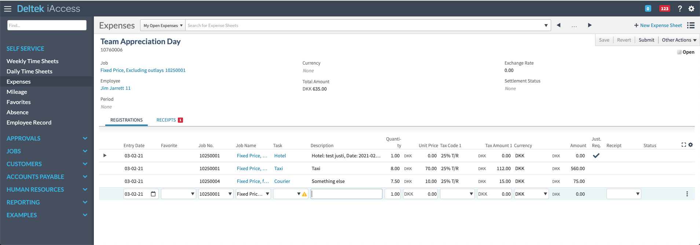
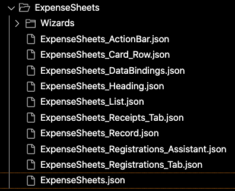
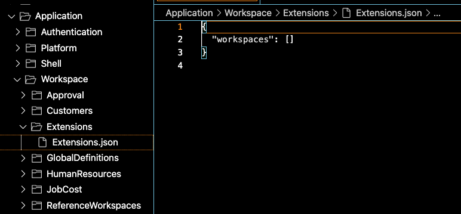

iAccess for Maconomy
Anders Hessellund, Søren Bache
March 12, 2021
Agenda
- Background
- Status
- Architecture
- Extensions
- Workspaces
- Gap Analysis
- Tools
- Upgrades
Background: What is iAccess
- UI for the Web
- Desktop and tablets
- Based on the new REST API (Java Extensions included)
- WSC-like extension model

Background: The core team
- Framework team
- Peter, Anders, Piotr, Christa, Marcus, and Steve
+Søren as App lead, +Kristoffer as PdM - Ambition
- Build a kick-ass replacement for the old Portal
Background: The core team
- Limitation
- The old WSC framework team was 20-25 people
... vs 6 people on iAccess today - Consequence
- Focus, focus, focus
... and ideally a little less support ;)
Status: Brief History
Status: Weekly Usage Today

Architecture
- Angular application (HTML, CSS, JS)
- Communicates with Maconomy over REST
- Relies on the same Java Extensions as the WSC
- Declarative configuration language in JSON
- Translated using Maconomy dictionaries
- Goal: Stick with the standards
Architecture

Architecture: Integrations

Extensions
- WSC-like extension model (...think MDML/MWSL)
- Edit and deploy using the Extender
- Extensions are stored in MaconomyDir\Web
- One JSON format vs many XML formats
- Different approach to extension file layout
Extensions: File Layout

application.json
shell.json
JSON Galore

Extensions: File Layout
- The browser initially requests application.json
- The server compiles that based on a large set of JSON files
- Observe that this is a directed acyclic graph
- Files are split according to a central convention
- Goal: Limit the impact of small changes
Impact of Extensions

Impact of Extensions

Impact of Extensions

Extensions: File Layout (Big Picture)
- authencation.json
- Which login methods and URLs are supported
(may eventually be replaced by a workflow for TIA consultants) - platform.json
- Configure language, usage tracking and advanced container overrides
- shell.json
- Configure menu, notifications, formats, conversations
- workspace.json
- Extend existing workspaces and/or build new ones
Workspaces

- Contained in a single folder with one main file, e.g., ExpenseSheets.json
- Main properties are dataBindings and layout that correspond to MWSL/MDML in the WSC
Workspaces
- Workspace name included for searchability
- Files match UI areas, e.g., heading, list view, each row in the layout

Data Bindings
Data Bindings: concepts
- Containers
- Represents panes from containers made available in the REST API / Extension Framework
- Bindings
- The relations between these containers, e.g., primary key, mount, with etc
Data Bindings: concepts
- Container types
- A container can be represented in different ways, e.g., search-filter, card, table, or filter-as-table, or have a special origin, e.g., document, analyzer, or pp
- Extras
- URL parameters, Shared Record, OrderBy, Restriction, Paging, and Triggers
Layout
Layout: concepts
- Heading
- Workspace navigation, e.g., calendar, filter or none
- List
- List view where the main search can be controlled
Layout: concepts
- Record
- Summary information about the current, main record, e.g., this expense sheet
- Action Bar
- Selected actions
- Rows
- The layout rows that constitute the main content. Rows can be divided in columns etc.
Workspace File Layout - recap
Workspace: Two Types of Extensions
- Adapt
- Extend an existing workspace by overriding on or more files
- Build
- Create a new folder with your own workspace
(Expense Sheets is a good template)
extensions.json
Best Practice
Don't try to map all WSC workspaces 1:1 to iAccess
It will not perform
Too many containers in one workspace is a warning sign.
Consider splitting large workspaces into smaller, more focused ones.
Best Practice
The data binding hierarchy represents the flow of data,
not necessarily how it looks
Best Practice
UI Library Tour
next time?
Gap Analysis
- MWSL
- Majority is covered today
- MDML
- Weak areas: styling, triggers, conditionals
- EL
- Still only 20% of WSC functions implemented
Tooling
- Maconomy Extender is the recommended tool
- Chrome Developer Tools for debugging
Best Practice
Console logs, the Network tab and HAR files
are your new friends
Best Practice
When running into weird behavior,
double-check with another client, e.g., WSC
Where can I get help?
Questions
Go!